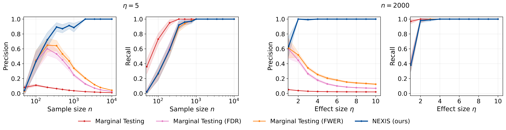
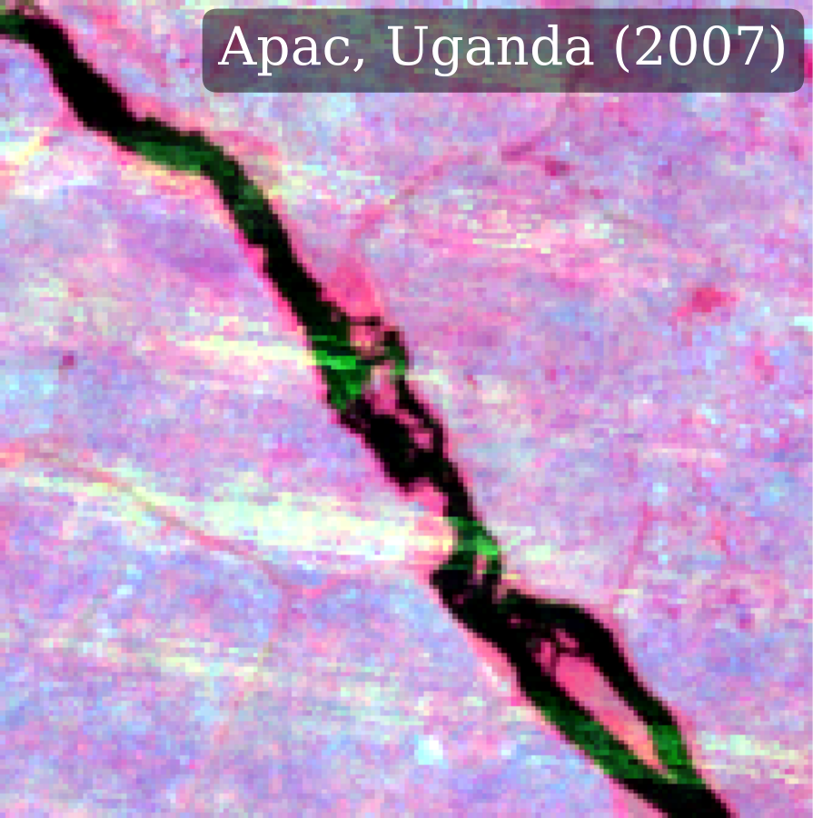
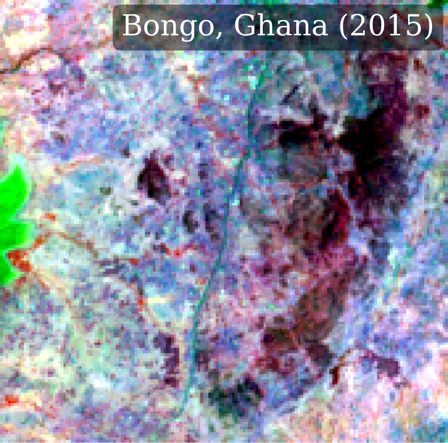
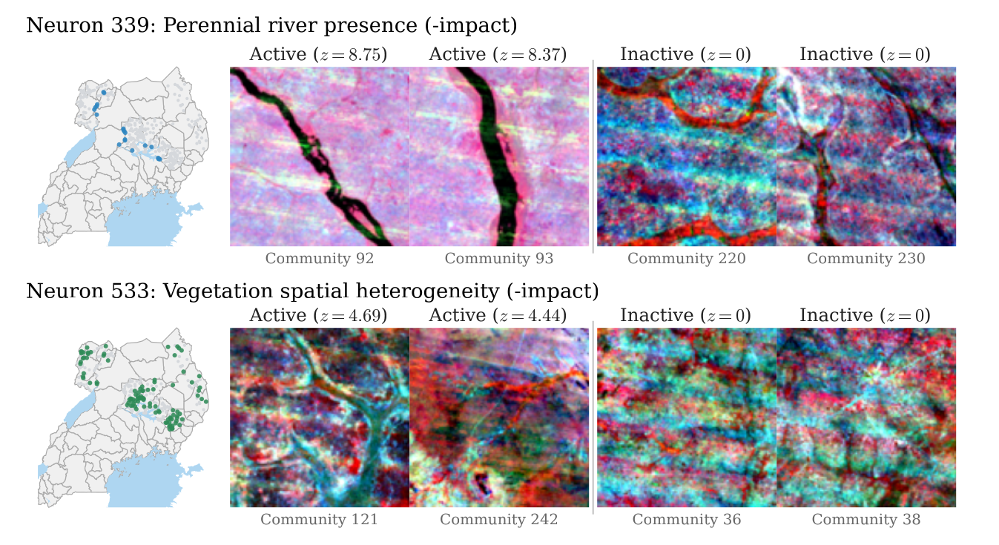
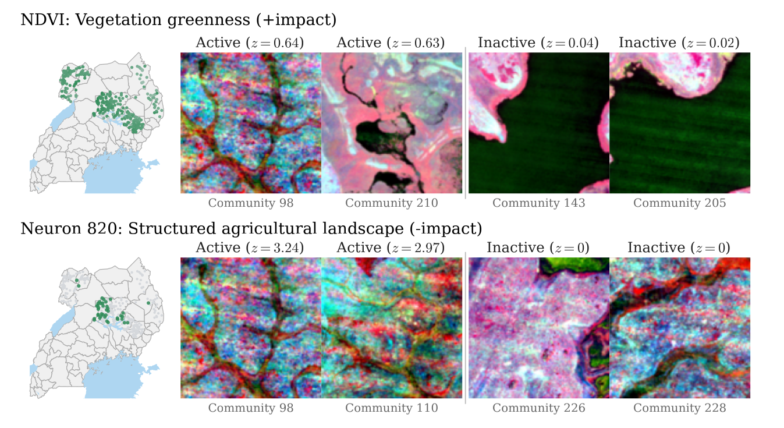
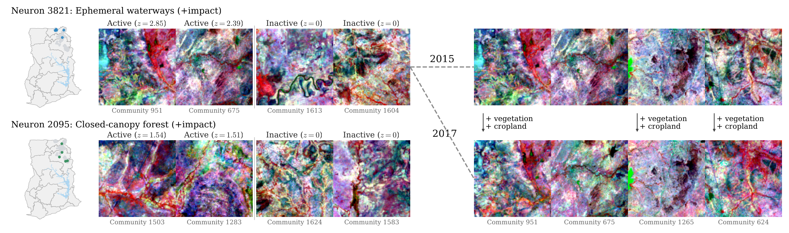

From Tokens to Policy: Causal and Interpretable Heterogeneous Treatment Effects Identification
Recasting heterogeneous treatment effect identification as Markov-blanket discovery over a learned, interpretable representation
Heterogeneous treatment effect (HTE) identification explains for whom and why an intervention works, but existing methods trade expressivity for interpretability and — when active heterogeneity drivers go unmeasured — admit spurious characterizations with no causal reading. This work argues that an oracle causal HTE characterization is now within reach in controlled experiments, thanks to extensive multi-modal pre-treatment measurements and scalable representations learned with minimal supervision. It reframes HTE identification as a Markov-blanket discovery problem on a sufficient, aligned pre-treatment representation and introduces NEXIS (Neural EXposure Interaction Search), an iterative forward–backward procedure with provable and empirically validated consistent selection. Deployed on two anti-poverty programs in Africa — augmented with satellite imagery capturing previously unmeasured environmental effect modifiers — NEXIS surfaces novel, interpretable, and prescriptive guidelines for the programs’ next iterations.
Why interventions don’t work the same for everyone
Real-world interventions rarely act uniformly across a population, and understanding why and how their effect varies is essential to optimize policy accordingly. Traditional heterogeneous treatment effect (HTE) estimation trades expressivity for interpretability over the available pre-treatment measurements. Yet even an accurate, interpretable estimate need not tell a policymaker how to intervene: HTE is causally explained only by the standalone treatment interactions (VanderWeele 2009), which are often unmeasured but reflected in their proxies, common-cause companions, and upstream indirect modifiers (VanderWeele and Robins 2007) — handles that may be misleading or carry no causal reading at all.
Motivation — disentangling anti-poverty impact beyond survey data. Cash-transfer programs such as YOP in Uganda (Blattman et al. 2014) and LEAP 1000 in Ghana (Ghana LEAP 1000 Evaluation Team 2018) routinely monitor household demographics while ignoring environmental context, e.g. water access. To optimize the next round of resource allocation, policymakers need to causally explain the impact heterogeneity — recoverable only by integrating external, potentially multi-modal sources such as satellite imagery. Standalone demographic covariates are insufficient.
The authors argue that two recent advances finally bring causal HTE identification within reach in controlled experiments: increasing measurement capacity, which makes it plausible that any treatment interaction is captured even when entangled in complex multi-modal observations; and modern representation learning, in particular sparse-autoencoder dictionaries (Cunningham et al. 2023; Bricken et al. 2023) learned from pre-trained foundation-model representations, which yield aligned and scalable representations of those observations.
A causal, interpretable target
Consider a controlled experiment with n units, a randomly assigned binary treatment T \in \{0,1\}, and outcome Y \in \mathbb{R}. Writing the potential outcomes Y(0), Y(1), the unit-level effect is \tau := Y(1) - Y(0), and the quantity of interest is the conditional average treatment effect (CATE) over a set of pre-treatment direct effect modifiers (or interactors) \bm{W}^{\mathrm{dir}}:
\tau(\bm{w}) := \mathbb{E}\!\left[\tau \mid \bm{W}^{\mathrm{dir}} = \bm{w}\right].
Targeting \bm{W}^{\mathrm{dir}} is doubly desirable. It is the minimal and sufficient summary of the heterogeneity — by definition it d-separates any pre-treatment variable from \tau, forming a Markov blanket of the effect heterogeneity — and it is causal and interpretable, identifying the interventional functional \tau^{do}(\bm{w}) := \mathbb{E}[\tau \mid do(\bm{W}^{\mathrm{dir}} = \bm{w})].
The difficulty is that \bm{W}^{\mathrm{dir}} is generally latent. Following VanderWeele and Robins (2007), the work distinguishes direct modifiers from their ancestors (indirect modifiers), their descendants (proxies), and modifiers by common cause. Only direct modifiers carry a causal interpretation; the others should be read cautiously.
Two assumptions make the latent target reachable. Measurement Sufficiency asks that the aggregated pre-treatment measurements \bm{X} entangle all the heterogeneity information, \mathbb{E}[\tau \mid \bm{X}] = \mathbb{E}[\tau \mid \bm{W}^{\mathrm{dir}}]. A representation \bm{Z} := \psi(\bm{X}) \in \mathbb{R}^m — a sparse autoencoder (SAE) on a frozen foundation-model encoder — is then required to satisfy Representation Sufficiency, \mathbb{E}[\tau \mid \bm{Z}] = \mathbb{E}[\tau \mid \bm{X}] (naturally enforced by the reconstruction loss), and Principal Alignment: each direct modifier is summarized by one distinct dominant coordinate, defining the principal proxy set \mathcal{S}^\star \subseteq [m].
The experimental power paradox
Identifying \mathcal{S}^\star is not as simple as screening each coordinate for effect modification. In a learned dictionary, broad entanglement means many coordinates inherit marginal heterogeneity from the true interactors, so the set of effect-modifier coordinates \mathcal{M}^\star is a redundant, non-causal superset of the target \mathcal{S}^\star. The failure is structural, not a small-sample artifact: as experimental power grows (larger n, stronger signal, more sensitive tests), marginal screening converges to \mathcal{M}^\star and accumulates non-direct modifiers, each backed by genuinely significant evidence. More power makes the gap between \mathcal{M}^\star and \mathcal{S}^\star more visible, not less. The authors call this the experimental power paradox, and demonstrate it on a semi-synthetic randomized-controlled-trial benchmark built on CelebA (Liu et al. 2018; Mencattini et al. 2025) with |\mathcal{S}^\star| = 2 known direct modifiers (wearing a hat, wearing eyeglasses), where face images are the only pre-treatment information and a SAE with m = 13{,}824 codes is trained on SigLIP representations (Zhai et al. 2023).

NEXIS: Markov-blanket discovery for the CATE
Neural EXposure Interaction Search (NEXIS) recovers \mathcal{S}^\star by adapting the classic forward–backward Markov-blanket discovery skeleton (Tsamardinos et al. 2003) to a new target — the Markov blanket of the (unobserved) CATE functional — over a learned, pre-trained representation. The atomic operation is CATE-equivalence testing: for a candidate coordinate j and a current selection S, it returns a valid p-value p_j(S) for
H_0(j \mid S):\; \mathbb{E}\!\left[\tau \mid \bm{Z}^{S \cup \{j\}}\right] = \mathbb{E}\!\left[\tau \mid \bm{Z}^{S}\right] \quad \text{a.s.}
At each round NEXIS performs a forward step — adding the coordinate whose conditional residual heterogeneity is most significant (gated at \alpha / |\bar S|) — and a backward step that re-tests every retained coordinate against the full current selection and drops any that has become redundant. The default significance level is \alpha = 0.05, with a Bonferroni gate for family-wise error control (Bonferroni 1936); less conservative controls (e.g. FDR) plug in directly.
The central guarantee combines selection consistency with causal identification. Under Principal Alignment, mean-faithfulness, and test validity, NEXIS’ output \widehat{\mathcal{S}}_n satisfies
\liminf_n \, \mathbb{P}\!\left(\widehat{\mathcal{S}}_n = \mathcal{S}^\star\right) \ge 1 - \alpha,
and, additionally assuming Measurement and Representation Sufficiency, the selected proxies identify the interventional functional, \tau^{do}(\bm{W}^{\mathrm{dir}}) = \tau(\bm{W}^{\mathrm{dir}}) = \mathbb{E}[\tau \mid \bm{Z}^{\mathcal{S}^\star}] almost surely.1
1 The proof sketch reduces NEXIS to forward–backward Markov-blanket discovery on the CATE over \bm{Z}; a standard IAMB-style argument then delivers asymptotic recall and conditional precision, with Measurement and Representation Sufficiency supplying the causal reading.
Positioned against existing HTE families, NEXIS is the only one the authors report as achieving all three desiderata at once — being empiricist (data-driven feature extraction from raw observations), interpretable, and prescriptive (targeting treatment-interactive factors):
| Method family | Empiricist | Interpretable | Prescriptive |
|---|---|---|---|
| Forest-based | ✗ | ✗ | ✗ |
| Meta-learners | potentially | ✗ | ✗ |
| Post-hoc interpretations | ✗ | ✓ | ✗ |
| Decision-rule-based | ✗ | ✓ | ✗ |
| Deep-learning-based | ✓ | ✗ | ✗ |
| NEXIS (ours) | ✓ | ✓ | ✓ |
Closing the loop on two anti-poverty programs
The authors deploy NEXIS on two real cash-transfer evaluations, each extended with satellite imagery to capture previously unmeasured environmental factors. Examples of the kind of environmental interactor that standalone survey data ignores:


Uganda — Youth Opportunities Program
The Youth Opportunities Program (YOP) (Blattman et al. 2014) launched in 2008 in post-conflict Northern Uganda, awarding cash grants to self-organised youth groups, randomized across 439 groups in 331 communities, with a positive average effect on productive economic capacity. Building on an earlier satellite-based analysis (Jerzak et al. 2023), the authors re-extract Landsat-7 multispectral imagery (2005–2007 composite), embed it through the Prithvi-EO geospatial foundation model (Szwarcman et al. 2025), and learn a SAE dictionary on a held-out national grid disjoint from the trial sites; NEXIS then selects conditionally from a pool that unions the dictionary atoms with the structured demographic covariates, and each retained atom is labelled post-hoc by contrasting top- and bottom-activating tiles with a vision-language model (Bai et al. 2025).


NEXIS identifies two environmental direct modifiers for each target, plus three ethnolinguistic-group interactions for skilled employment only — suggesting impact that is invariant across the individual-level demographics (age, sex, parental education), all very homogeneous by experimental design. For skilled employment, the ethnolinguistic groupings point to post-conflict market connectivity as the key moderator, while perennial-river presence and vegetation spatial heterogeneity pick out landscapes where fishing or bush subsistence remains a viable outside option, reducing the pull of a new skilled trade. For business assets, greater vegetation greenness raises impact (more productive baseline land compounds the grant), while structured agricultural landscape dampens it (plausibly crowding-out by incumbent commercial-scale agriculture). None of these environmental modifiers was within reach of the prior approach, and a naive marginal screen on the same representation instead returns several dozen correlated “discoveries” per outcome — a real-world instance of the experimental power paradox.
Ghana — Livelihood Empowerment Against Poverty 1000
The LEAP 1000 programme (Ghana LEAP 1000 Evaluation Team 2018) launched in Ghana in 2015 to target early-childhood poverty and stunted nutrition, providing bimonthly cash transfers to extremely poor households with newborns. It was evaluated on average via a regression-discontinuity design with difference-in-differences estimation (2015–2017), covering 2,331 households across 162 communities in the North and Upper East regions. The authors extend it to impact heterogeneity on the expenditure effect, complementing the 24 survey covariates with Landsat-8 imagery (2015) embedded through Prithvi-EO, pooled with spectral indices and selected conditionally by NEXIS.

NEXIS identifies two satellite-derived direct modifiers — ephemeral waterways and closed-canopy forest — and no demographic modifiers. In the small number of communities endowed with seasonal water corridors the estimated effect is several times larger than the overall average, with a similar pattern for the rare forest-patch communities in this predominantly arid Savannah region. The authors read this through complementarity: water-adjacent smallholders can direct transfers into irrigation-season agriculture, while forest-edge households can layer cash onto non-timber livelihood strategies unavailable elsewhere — the former supported by observed cropland expansion and denser riparian vegetation from 2015 to 2017. The absence of demographic discoveries is itself informative, suggesting invariant impact across household behavior within an already homogeneous target sub-population.
Takeaways and caveats
Across both programs, the impact is largely invariant to individual-level demographics and mainly characterized by environmental factors that are coarsely proxied — or fully unmeasured — in standalone survey data. The work frames itself as a paradigm shift from static HTE estimation on survey data toward extensive exploration across unstructured modalities, introducing what the authors describe as the first procedure to identify a causal and interpretable HTE characterization from complex observations. The headline limitation is its reliance on assumptions: measurement sufficiency cannot be tested directly without auxiliary experiments, representation alignment is only testable with supervision, and CATE-equivalence testing must be both well-specified and data-efficient. If any of these fails, the causal guarantee is lost — so the authors stress that every result should be interpreted and experimentally validated rather than trusted blindly. A copyable BibTeX entry for this paper is generated automatically below.
Citation
@misc{cadei2026,
author = {Cadei, Riccardo and Otchere, Frank and Tirivayi, Nyasha and
Angeles Tagliaferro, Gustavo and J. Bargagli-Stoffi, Falco and
Locatello, Francesco},
title = {From {Tokens} to {Policy:} {Causal} and {Interpretable}
{Heterogeneous} {Treatment} {Effects} {Identification}},
date = {2026-06-15},
url = {https://arxiv.org/abs/2606.17010}
}